How to Weather the Storm of Economic Uncertainty
Jennifer Wadella

Jennifer Wadella
@likeOMGitsFEDAY
- VP of Frontend Engineering at 
- Angular GDE, Cohost of the Angular+ Show
- Kombucha brewin' crazy plant lady

This talk may contain strong language, harsh truths, and serious passion.
The tech industry has seen more than 240,000 jobs lost in 2023
Economic Factors
- Delayed impact from COVID - unsustainable hiring boom & salary spike
- Ukraine Russia war + EU Response
- Inflation spike - price increases of 9.1%
- Looming Recession
- VC Pressure to decrease expenses
- Follow the Leader
- Good Ole Capitalism
Survival Strategies
- Get Your Finances in Order
- Stay Employed
- Get Employed
Get Your Finances in Order
Disclaimer: I am NOT a financial advisor.
Rule of Thumb
Beef Up Your Savings - should be able to float your normal expenses for 6 months in event of job loss.
Be Familiar with Your Investment Options
If your employer offers these, TAKE ADVANTAGE.
Consider a financial advisor
401(k)
A retirement savings plan offered by an employer, which allows employees to contribute a portion of their salary on a pre-tax basis.
Traditional IRA
A tax-deferred retirement account that allows individuals to contribute pre-tax dollars. The contributions are tax-deductible, and the investments grow tax-deferred until withdrawn in retirement.
Roth IRA
An individual retirement account that allows individuals to contribute after-tax dollars. The contributions are not tax-deductible, but the investments grow tax-free, and qualified withdrawals are tax-free in retirement.
Be Familiar with Medical Expense Savings Options
Flexible Spending Account (FSA) - allows you to set aside money PRE-TAX, for healthcare and dependent care expenses. Funds CANNOT be carried over.
Health Savings Account - an investment account that allows you to make pre-tax contributions. Unused amounts can be carried over year to year.
Dependent Care FSA - you can put aside pre-tax money for child (& adult) care expenses like day care, summer camp,
How to Stay Employed
Know Your Company
How does your company make money? Is it profitable? Is there sustainable growth? Is the sales strategy effective?
How to Get Important Information
- You can always ask
- Look for "Investor Relations" Information
- Check the Business Journal
Know Your Value
Understand the BUSINESS value you provide. Relate your work to company goals, pull numbers and documentation wherever you can.
Brag Sheet
Create a personal brag sheet, collect wins and feedback throughout the year.
Solicit Feedback
Ask for feedback from managers, co-workers, peers, clients. Document this.
Know Salary Bands
Research current salaries based on your skills, tenure, and area, THEN MAKE THE ASK.
Go Into Reviews Prepared
Have documentation prepared, show your value, show progress towards previously discussed goals.
Demand Reviews
to: < my boss >
cc: HR
Hi boss,
In order to make sure I'm doing my job well and contributing value to the company, I'd like a bi-annual review to discuss my growth and progress. I'd like to schedule something for
Know How to Spot Warning Signs
Warning Signs
- Increased secretive meetings with key leadership
- Micro-Managing ramping up
- Heavy scrutiny of IC performance
- Sudden onboarding of consultants or 3rd party vendors
- Halted discussion regarding roadmaps and future plans
- Surprising interest in infrastructure and tool costs
- Paychecks delayed or "issue with bank" excuses
What Layoff Strategy Looks Like
Managing Out
May come in the form of moving goal posts, being put on a PiP, or being tasked with unmanageable work & deadlines.
If You Think You're Getting Managed Out
Papertrail, papertrail, papertrail!
- Demand documentation of expectations/requests
- Demand goals be S.M.A.R.T. - specific, measurable, achievable, relevant, time-based
- Avoid verbal discussions around expectations
- Recap expectations in email, and ask for confirmation that they're accurate
- Call out unrealistic expectations in writing
Don't Quit*
The more you papertrail, the more of a liability to let go you look like to HR, the fatter your severance package.
* This advice goes out the window if your mental/emotional wellbeing become compromised.
How to Get Employed
Get Prepared
Update your Linked In. Solicit Reviews. Update your personal website. Get a portfolio ready.
Polish Your Resume
Include more than technical details - call out big picture wins you had and how they contributed to company success. Ask peers and previous managers for feedback.
Remember that brag sheet? That'll help a lot when it's time to update!
Write that Cover Letter
(Or let ChatGPT help)
Tweak and tailor it to each job opening.
Practice Interviews
Practice 1337 code with friends. Read books.
The Imposters Handbook by Rob Conery
Follow the Money
Keep an eye on the ecosystem. Look at growing areas like Machine Learning, AI. Look at industry opportunities like AgTech, Finance, Healthcare,
Keep Submitting!
Network
Get to meetup events. Make new acquaintances. Connect on Linked In. Schedule coffee meetings. Volunteer.
Events in KC
- Dec 13 - KCWiT Holiday Party
- Every Saturday - Coffee & Code KC
- Hispanos y Amigos Tech KC
- Kansas City Microsoft Azure Meetup
Questions?
Slides available at:
https://tehfedaykin.github.io/SurvivingEconomicUncertainty
Need help with Application Development or Engineering Culture? Work with me! jennifer@bitovi.com